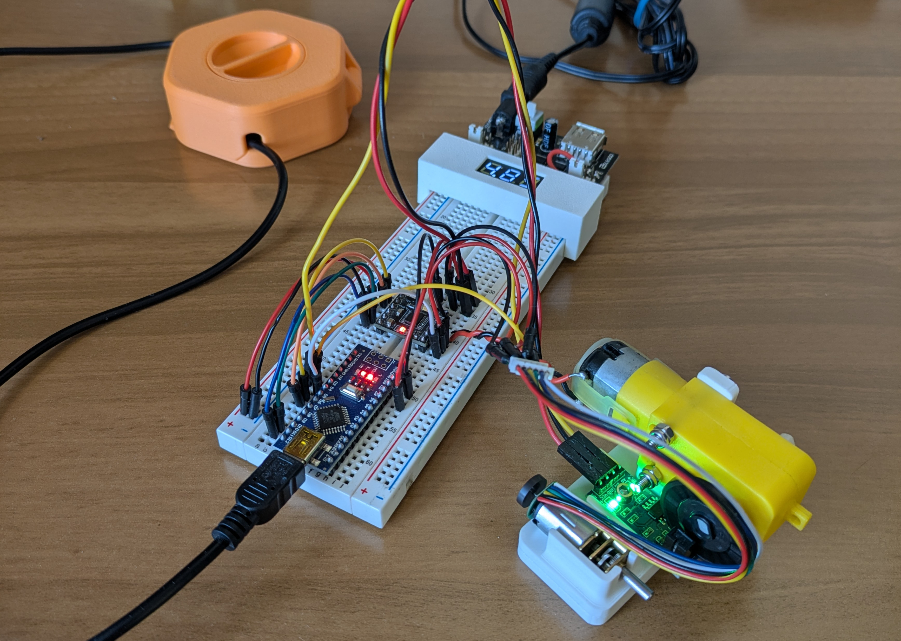
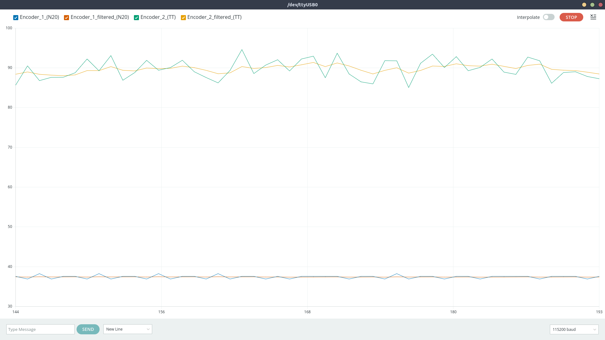
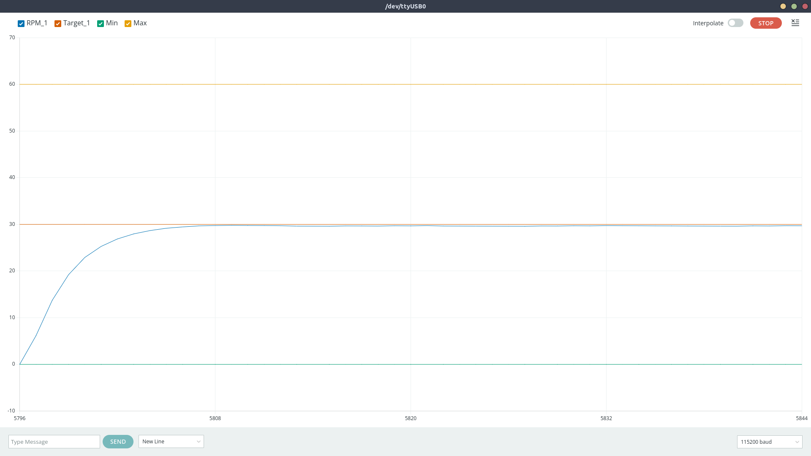

Project Overview
I took a class in Autonomous and Mobile Robotics, which dealt with `planning and control methods for achieving mobility and autonomy in mobile robots`. I wanted to explore these concepts in dept so I decided to build a platform to experiment with.
I decided to go for the simplest mobile robot I could think of that is still of practical utility: a differential drive robot. It follows the same kinematic model as a unicycle, which is the simplest model that captures meaningful mobility, but is easier to build.
The main focus of the project was to apply some theory and build a testbed for studying motion regulation. Even two motors from the same manufacturer and production batch may behave differently — one might rotate faster than the other under the same voltage. Friction in gears, additional load, and wheel–ground interaction introduce further disturbances that degrade motion accuracy. Open-loop control is not reliable under these conditions, so I focused on closed-loop RPM regulation and related feedback strategies.
This also tied into a broader architectural question. A professor once pointed out that effective robot design often separates computation into two layers: a high-level stage for low-frequency, heavy tasks — planning, fiducial pose correction, and so on — and a low-level stage for motor control and sensor reading in near-real time. I wanted to test this idea, so I used a Raspberry Pi for high-level logic and an Arduino Nano for low-level control. In hindsight, this setup is limited. The upper layer is currently underused, and the lower layer lacks a real-time operating system, which leads to duty-cycle jitter and timing inconsistencies that affect RPM estimates.
This article provides an overview of the project, showing the design process from start to finish. The robot is functional, but it is only a first iteration and will require extensive changes before becoming a solid platform for further work.
Hardware
I started prototyping with this rig. You can see two different motor–encoder combinations because one of the goals was to keep the design modular and not tied to any specific hardware. I tested the following:
- A TT motor (the yellow one) with an infrared encoder mounted on the output shaft, after the reduction. It has low resolution (20 ticks per rotation) and thus high time delta between subsequent encoder pulses.
- A N20 motor with a magnetic encoder mounted on the motor shaft, before the reduction. This has higher resolution (3 ticks per motor shaft rotation, with a 298:1 reduction, meaning we should see 894 ticks for a complete rotation of the output shaft), and a much lower time delta between subsequent encoder pulses.

Prototyping rig
After making sure everything was working as intended I moved on to designing the PCB.

Circuit diagram
The circuit is very simple:
- An Arduino Nano handles the low level stuff (controlling the motors, reading encoders and sensors, ...).
- A Raspberry Pi Zero can act as a high-level node in a larger system, receiving messages from external processes and sending commands to the Arduino.
- The DRV8833 is an H-bridge. An H-bridge allows a DC motor to be driven in both forward and reverse directions by switching the polarity of the voltage applied to the motor. The DRV8833 in particular supports variable speed both formward and backwards when a PWM signal is used.
- I used two N20 DC motors, rated for 60RPM at 6V. They have a gearbox and a two-phase magnetic encoder. This kind of encoder allows to compute both the direction and the velocity the motor is spinning, even though we will use just one phase (more on this later).
- UART is used to let the Arduino (low level) and Raspberry (high level) send messages back and forth. The UART is a common serial communication protocol that uses pins VCC, GND, RX (receive data pin) and TX (transmit data pin). The problem in my case was that the Arduino uses 5V logic while the Raspberry Pi uses 3.3V logic. I used the two resistors R1 and R2 to implement a voltage divider to bring the voltage from the two devices on the same level.
In the schematics you can notice I reserved two 4-pin slots, one with the 5V, GND, SDA, SCL pins and another one with pins from A0 to A3.
- The first slot is used to interface with I2C devices (SDA, SCL) like for example an IMU.
- Pins A0 to A3 can be used for other purposes. In particular, they can be used to control a shift register. I specifically thought about a shift register because one of the things I wanted to experiment with was integrating ToF sensors and using them for mapping instead of a LIDAR. The sensors I had work with I2C but they share the same address. In order to use one of them I had to enable it (pulling the enable pin high), assign a unique address and disable it again (pulling the enable pin low) at startup. A shift register would have been just what I needed, as it lets me control up to 8 new digital outputs. I successfully tested this idea to drive 8 LEDs and I wrote a simple library to interface with the shift register, which I'll include in the GitHub repository even though it is not currently used in the code.
Other components, not explicitly mentioned in the schematics, are:
- The Power Supply Unit, a ZMR 8A Dual BEC. I ordered it from Aliexpress for a few bucks. The documentation is very sketchy and I didn't find much on the internet about it. I bought it because it features two independent outputs with a voltage selector. This way we can power the motors at 6V and the other electronics at 5V. I had to remove the top cover and the outer insulation film and to replace the connector and the switch.
- The battery, a 2S 500mAh Lipo. These kind of batteries are usually found in RC planes and cars.
Moving to the PCB layout, I managed to fit everything on a disc with a 10 cm diameter.

PCB

Manufactured PCB
I printed the rest of the structure in Matte Black PLA and the wheels in TPU to add extra grippyness even though it wasn't as grippy as I hoped for. I used M2 heat set inserts and screws to mount everything. The wheels are just press fitted on the motor shaft and I used an M3 washer on each to separate them from the mounting bracket. Mounting batteries is always tricky: in this case I used velcro tape to secure it.
Another aspect worth mentioning is the caster wheel. I used a 10mm diameter metal ball that I had lying around and I printed a mount that allows it to spin more or less freely.

Caster wheel
This is the exploded view of the chassis:

Chassis
You can find everything you will need to build the robot on this repository:

Control scheme
As anticipated, one of the problems is that no motor is exactly the same and we need to compensate for that. Even if you buy two identical motors, one will always spin a little faster, draw a bit more current, or have slightly different friction. Add in battery voltage drops, uneven surfaces, and normal wear over time, and things get worse quickly. We can't just send the same signal to both wheels, the robot will not move straight.
I’ve always been fascinated by warehouse robots (e.g. KIVA/Hercules used by Amazon) and I can only dream of that level of precision. As far as my understanding goes, industrial robots doesn’t just rely on better (and more expensive) hardware than mine. They typically have a hierarchical control architecture:
- A motor-level control, usually handled by the motor driver, closes high-frequency current and velocity loops around the motor, making them behave as ideal torque or velocity sources and compensating for hardware differences or nonlinearities.
- A robot-level control, commands desired wheel velocities to follow precise trajectories using model-based control, sensor fusion, and state observers (e.g., Kalman filters) to correct for drift, wheel slip, and disturbances.
To keep the system simple I discarded the (hardware) current and voltage loops and implemented a single high-level (software) velocity control loop around each motor using encoder feedback. Each wheel’s speed is regulated by a PID controller, and the raw RPM readings are smoothed using a 1D Kalman filter for noise reduction and improved estimation stability.
The PID is one of the most common and effective feedback control strategies in robotics. In this case, it continuously adjusts the motor command based on the difference between the desired and measured wheel speeds. It combines three simple control actions:
- Proportional (P): reacts directly to the current error (setpoint - measurement), provides immediate correction.
- Integral (I): accounts for the accumulated error over time, eliminating steady biases and driving the long-term error to zero.
- Derivative (D): anticipates the trend of the error, damping overshoots and oscillations.
Now, there are better places where to understand how PID works and how to tune it. I'll link a great resource I found:

In addition to the feedback control I considered using a feedforward term to anticipate the required motor command based on the desired velocity. This should act as a baseline estimate of the control signal for a given target RPM. Without feedforward, when a new speed command is issued, the initial error is large and the controller outputs a very high command (often near saturation), causing the motor to accelerate too aggressively before settling. Feedforward mitigates this by providing a more balanced and predictable response.
The encoder readings used to measure wheel speed are often noisy because of vibration, quantization, and small mechanical imperfections. To get a cleaner and more reliable value, I used a 1D Kalman filter. This filter takes both the current RPM measurement and the previous estimate into account, weighing how much it trusts each based on their expected accuracy. As a result, it smooths out sudden spikes or drops in the readings while still reacting quickly to real changes in speed. The filtered RPM is then sent to the PID controller, giving it a more stable and realistic signal to work with.

1D Kalman filter
Here’s the final control architecture. Each wheel has its own loop, so both are regulated independently using the same structure. The input is the desired RPM we want the motor to achieve. The controller produces a control signal (also in RPM) that is sent to the motor. Dedicated software translates RPM to PWM for the motor driver. The encoder reading is used to measure the actual RPM the motor is spinning, the filtered result is fed back to the controller as a reference for the next iteration.
Inner control loop (minor inaccuracies in how the 1D Kalman filter is diagrammed)
Software
The Arduino receives commands through UART from the Raspberry, parses them and controls the hardware accordingly. This is the code that handles that part:
// Read linear and angular velocities from UART (format: "linear,angular\n")
if (Serial.available()) {
String input = Serial.readStringUntil('\n');
int commaIndex = input.indexOf(',');
if (commaIndex > 0) {
float linearVel = input.substring(0, commaIndex).toFloat();
float angularVel = input.substring(commaIndex + 1).toFloat();
robot.setVelocity(linearVel, angularVel);
}
}
The rest of the firmware is structured around a few key components. All are designed to be modular and reusable:
- The encoder library provides support for different kinds of encoders: high-resolution (e.g. on motor shaft, before reduction) and low-resolution (e.g. on gearbox output shaft, afer reduction). I'll talk a bit more on this in the following section.
-
The motor library controls the DRV8833 H-bridge. It exposes methods to coast, brake, and
drive the motor
at a given normalized speed (float in range -1 to 1). PWM signals allow speed control.
const uint8_t motorInA = 5; // Should be PWM capable const uint8_t motorInB = 6; // Should be PWM capable const uint8_t motorEanble = 4; Motor motor(motorInA, motorInB, motorEnable); motor.enable(); motor.drive(0.8f); -
The PID library provides the implementation for a PID controller.
const float kp = 0.1; const float ki = 0.1; const float kd = 0.1; PID pid(kp, ki, kd); // ... while (condition) { // Compute dt in seconds unsigned long now = millis(); if (now - lastTime < dtMillis) return; float dt = (now - lastTime) / 1000.0f; // seconds lastTime = now; float actual = sensor.read(); float control = pid.update(target, actual, dt); // Apply the control } -
The Kalman library provides the implementation for a 1D Kalman filter.
KalmanFilter filter(0.1f, 1.0f, 25.0f); // ^ ^ ^ // | | Initial error covariance (allow more initial uncertainty) // | Measurement noise (fast motor = more measurement variance) // Process noise (prevent covariance collapse) // ... while (condition) { float reading = sensor.read(); float filtered = filter.update(reading); // ... } -
A DriveUnit object represents an actuated wheel. It bundles a motor, encoder, PID
controller and Kalman filter.
During each control cycle, it:
- Measures the current wheel RPM using the encoder
- Filters the measurement through the 1D Kalman filter
- Computes the control signal via PID regulation
- Sends the resulting command to the motor driver
const uint8_t encoderInA = 2; const uint8_t motorInA = 5; const uint8_t motorInB = 6; const float ticksPerRev = 894.0f; // Depends on the motor const float maxSpeedRPM = 60.0f; // Depends on the motor Encoder encoder(encoderInA); Motor motor(motorInA, motorInB, motorEnable); DriveUnit driveUnit(motor, encoder, ticksPerRev, maxSpeedRPM); // Configure the driveUnit e.g. set PID gains, set Kalman gains, ... driveUnit.setTargetAngularVelocity(40); // Or setTargetRPM // ... while (condition) { driveUnit.update(); }
Encoder Implementation
Encoder pulses can occur at high frequency, especially for high-resolution encoders mounted on the motor shaft. Polling them in the main loop would lead to missed ticks. Each encoder should be updated inside an interrupt service routine (ISR) that triggers on encoder signal rising edge.
The standard pattern for creating and updating an encoder looks like this:
Encoder encoder(pin);
void encoderISR() {
encoder.update(); // increase number of ticks
}
attachInterrupt(digitalPinToInterrupt(pin), encoderISR, RISING);
However, this approach requires manually declaring the ISR function and attaching it to the pin every time an encoder is created. To make the encoder setup more user-friendly and reduce the amount of code one should write, I used a static interrupt pattern. This means a predefined number of encoder instances are created and each one has a dedicated static ISR that references the correct encoder object.
This is how instantiation looks with the static ISR pattern:
Encoder encoder(pin);
This design allows to instantiate an encoder once and forget about ISR setup (handled automatically). Interrupt management is isolated inside the Encoder class.
The trade-off is that some configuration must be hardcoded at compile time (the number of supported encoders).
The Arduino Nano only has 2 interrupt capable pins, so it was unnecessary to support more encoders via software. If you want to support more encoders, you can change this part of the code:
// encoder.hpp
static Encoder* _instances[2]; // support 2 encoders
// encoder.cpp
Encoder* Encoder::_instances[2] = {nullptr, nullptr};
Another aspect worth mentioning is the fact that each encoder has two modes: Count Mode and Period Mode.
-
Count Mode is designed for high-resolution encoders mounted directly on the motor shaft. In
this case the time between
two subsequent pulses is very short and we must measure the speed by counting the number of ticks over a
fixed
time window. The RPM is computed as:
float computeCountMode(long deltaTicks, long deltaTime, int ticksPerRev) { return (60.0f * 1000000.0f * deltaTicks) / (ticksPerRev * deltaTime); } -
Period Mode is designed for low-resolution encoders, typically mounted on the gearbox ouput
shaft, after the reduction.
In this scenario tick intervals are longer and counting over time would lead to poor precision. Instead of
counting ticks
we measure the time between consecutive pulses, from which the RPM is derived as:
float computePeriodMode(float tickIntervalMicros, int ticksPerRev) { return (60.0f * 1000000.0f) / (tickIntervalMicros * ticksPerRev); }
A question might arise: why not using quadrature encoders?
Quadrature encoders can detect both speed and direction, but each requires two interrupt-capable pins. With two encoders, this would consume four interrupts, exceeding what the Arduino Nano provides. Since motor direction is already known from the control signal, single-channel encoders suffice.
You can find the complete code in this repository:
Conclusions
This is the result:

Robot performaces, with and without control loops
We can notice two things:
- The robot goes forward in a straight line but eventually small errors accumulate, causing it to drift off track. This is not a big deal as we should be able to compensate for small inaccuracies with pose-correction techniques.
- It's a bit difficult to see in the gif but the motion is quite jerky.
That little zig-zag motion is a classic effect when two wheels are controlled independently. Each wheel’s PID controller only sees its own measurement and reacts locally, so the corrections happen at slightly different times and magnitudes. On top of that, encoder quantization and other unwanted effects make the control inputs jumpy. Those small, asynchronous corrections adds up and the result is a wiggly, zig-zag path instead of a perfectly smooth line. I'm not sure how to solve this problem, but I think the result obtained is satisfactory for now.
Another problem is the transient i.e. the time we need to wait for the PID to make che controlled variable converge to the setpoint. During this time the speed is still adjusting and it's difficult to know how much the respective wheel has turned. This can be solved by either spending more money for better hardware or by tuning the PID better (to be more reactive).

Transient problem
For now, I’ll stop here and treat this as a first version. Overall, it was a fun little project.